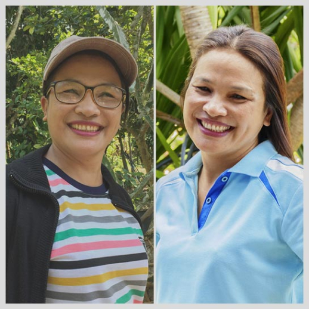
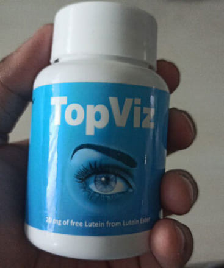
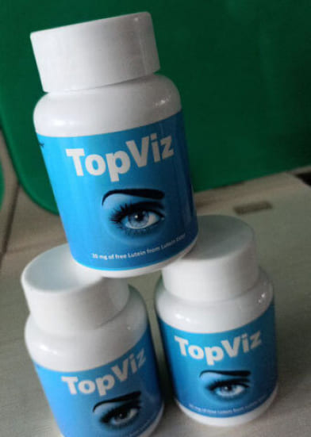

Факрух
Я врач-офтальмолог с 23-летним стажем работы. Услышал об этом препарате от моего коллеги из Лаоса на международной конференции год назад. С тех пор регулярно советую принимать его пациентам, которые приходят с проблемами зрения. Состав у TopViz действительно идеальный! Он подходит как тем, у кого уже есть серьезные нарушения зрения, так и тем, кто только начал замечать, что видит хуже. В среднем, через месяц пациенты приходят и я вижу, что их зрение становится намного лучше.
Шахид
Доктор, а подойдет ли этот препарат аллергикам? У меня аллергия на многие лекарственные препараты и боюсь сделать хуже. Не будет ли у меня аллергии?
Факрух
Состав у TopViz полностью натуральный, в него входят витамины, минералы и аминокислоты, которые жизненно необходимы для формирования и поддержания нормальной работы зрительного аппарата, поэтому они не навредят организму. Можете не бояться аллергии!
Шахид
Спасибо, доктор, обязательно закажу и начну принимать как только получу! А вы не подскажете, сколько нужно принимать этот препарат, чтобы закрепить эффект на всю оставшуюся жизнь? Я устал от ношения очков, хочу выкинуть их как можно скорее!😔
Факрух
Я обычно советую минимальный срок приема TopViz 1 месяц для начальных стадий нарушения зрения и 2 месяца для пациентов, которые уже не могут обходиться без очков и линз не только для чтения или письма, но и для повседневного функционирования.
Амитабх
Я работаю программистом 5 лет. Год назад начал замечать, что у меня болит голова каждый день, когда работаю за компьютером. Пошел к врачу, меня направили к окулисту, и оказалось, что у меня начальная стадия близорукости – зрение на тот момент упало до -2,50 на одном глазу и -2,00 на втором. Попробовал носить очки и линзы, но это очень неудобно. И зрение продолжало ухудшаться. Чуть не потерял работу из-за этих проблем, но вовремя узнал от коллеги из Германии об этом средстве. За месяц приема зрение полностью восстановилось, и теперь спокойно работаю даже по 12 часов в день без головных болей, очков и линз!😎

Аджай
Я тоже работаю за компьютером! Мое зрение тоже начало падать из-за этого, хотя у меня самый новый монитор, и производитель обещал, что из-за него не может быть проблем со зрением. Уже начала думать о лазерной коррекции, но хорошо, что вовремя нашла этот блог! Заказала курс лечения на 2 месяца и жду, когда придет моя посылка!🔥
Радж
Вот и у меня такая же проблема! Тоже постоянно болит голова, когда работаю за компьютером!🙈 Теперь я почти уверен, что у меня тоже проблемы со зрением, потому что все остальные причины врачи исключили. Записался на прием к окулисту, и если он найдет проблему со зрением, я уже знаю, что я буду делать!

Рекха
Моя работа тоже связана с компьютером. Я уже 20 лет работаю бухгалтером, и постоянная монотонная работа с числами утомляет сама по себе, а когда при этом болит голова и все расплывается перед глазами, это очень тяжело! Врач прописал мне очки, но я еще слишком молода для них, не хочу даже покупать! А вот TopViz – то что я точно куплю! Уже жду свою посылку.
Дивья
Мне про TopViz рассказал сын, он тоже работает в интернете за компьютером. Он вылечил свою дальнозоркость всего за месяц. А я начала лучше видеть за неделю, и уже забываю про очки. Тем более, что в очках я теперь наоборот вижу хуже, потому что мое зрение меняется к лучшему!

Амриш
Мне 43 года, и год назад я стал хуже видеть. Начал замечать, что я подсознательно отодвигаю от себя предметы, чтобы лучше рассмотреть их. Окулист сказал, что у меня начальная стадия дальнозоркости и мне надо носить очки. Но я еще совсем молод, какие очки?😥 Я недавно развелся и очки не помогут мне в знакомстве с девушками. Да, есть такие, кому нравятся мужчины постарше, но я таким не хочу быть. Друг сказал, что он купил TopViz своим родителям, которые плохо видят, и всего за месяц они стали видеть лучше. Нашел это средство в другом месте, правда, стоило оно в 3 раза дороже, чем здесь. К сожалению, сейчас я понимаю, что это были перекупщики, которые хотели нажиться на людях, у которых проблемы со зрением! Я попрощался с дальнозоркостью всего за месяц, но все-таки жаль, что купил средство намного дороже!

Катрина
Я тоже нашла TopViz в другом месте, заказала сразу 3 упаковки. Пропила его месяц, но ничего не изменилось. Как вы думаете, может ли быть такое, что я попала на мошенников?😱
Амриш
А вы четко следовали инструкции по применению препарата? Ничего не нарушали? Не пропускали прием?
Катрина
Нет, я точно ничего не пропускала! Все делала, как написано в инструкции. Скорее всего, мне просто попалась подделка (((.
Амриш
Сочувствую вам! В интернете полно мошенников, которые хотят нажиться за счет болезней и горя людей. К счастью, вы уже нашли сайт с официальной формой от производителя TopViz. Просто закажите его здесь, принимайте и выздоравливайте!
Катрина
Нет, я точно ничего не пропускала! Все делала, как написано в инструкции. Скорее всего, мне просто попалась подделка (((.

Мадхури
Моей маме 75 лет, последние 30 лет она всегда носит очки. У нее есть очки для зрения, для чтения, очки чтобы смотреть телевизор, солнцезащитные очки с диоптриями… За эти 30 лет она не раз меняла очки на более сильные, потому что зрение с возрастом только ухудшается. А полгода назад мы столкнулись с проблемой, что никак не могли выбрать ей очки. Какие бы диоптрии мы ни подбирали, ни одни не подходили. Когда мы пошли к врачу, он сказал, что у нее катаракта, и эти изменения уже необратимые. Нужно только менять хрусталик – делать операцию. Но ее здоровье не позволяет делать операцию. К счастью, я узнала от подруги, что ее сестра в Испании улучшила зрение при катаракте с помощью TopViz, и сразу начала искать этот препарат. В аптеках его нигде нет, но нашла официальный сайт производителя и заказала полный курс лечения. Уже через неделю мама начала лучше видеть в очках, а потом и без них! Сейчас она принимает препарат 3 месяца, и видит иногда даже лучше меня! Думаю, мне тоже пора заказать его для себя, чтобы избежать проблем со зрением в будущем!


Раджеш
У моего отца тоже катаракта! У него крепкое здоровье и он смог бы перенести операцию, но он очень боится врачей-хирургов. Да и стоит такая операция очень дорого… Спасибо, что рассказали свою историю. Теперь я знаю, как ему помочь!
Мадхури
Не медлите, скорее заказывайте TopViz! Тем более, пока он по такой цене. Мне пришлось купить его по старой цене, без скидки, но я рада что хоть так смогла помочь своей маме!❤️
Раджеш
Спасибо, уже заказал это средство только что. Теперь жду, когда преподнесу ему этот подарок. Так вы говорите, что уже через неделю мой отец сможет видеть лучше?
Мадхури
Наверное, в каждой ситуации по-разному, не могу сказать точно. Если у вашего отца тоже катаракта, то сначала он начнет лучше видеть в очках, а потом хуже – как сказал мне врач, это потому что сначала восстанавливается хрусталик, а потом уже те части глаза, которые отвечают за близорукость или дальнозоркость. И те очки, которые он носит сейчас, перестанут ему подходить. Нужно будет покупать очки с меньшим количеством диоптрий или ждать, пока зрение восстановится полностью.
Аджай
Я работаю веб-дизайнером, последние 10 лет только за компьютером. Я покупал очки для компьютера, но кто их носит?🙄 Постоянно забывал надевать при работе. В итоге зрение упало до -5,00, пришлось носить очки. А мне всего 33 года! Моя жена где-то нашла информацию об этом средстве и предложила попробовать. Я согласился, и так рад этому! Всего месяц принимаю, а вижу четко и ясно без всяких очков. Собираюсь заказать курс еще на месяц, чтобы закрепить результат и не пользоваться очками больше никогда в жизни!
Митхун
У меня зрение +4,50, и я так устал постоянно тратиться то на очки, то на линзы! Уже начал собирать деньги на лазерную коррекцию зрения, но после вашей истории понимаю, что лучше потрачу их на заказ этого средства. Лучше пролечиться один раз и забыть о проблемах со зрением навсегда!
Аджай
Это правильное решение! Лазерная коррекция подходит далеко не всем. Да и я не мог доверить свое зрение, благодаря которому я зарабатываю и содержу семью, в руки незнакомых врачей. Есть случаи, когда после коррекции люди совсем теряли зрение…
Митхун
Какой ужас!😢 Теперь точно никакой коррекции! Только натуральные средства, и ничего больше! Хорошо, что у этого препарата такой хороший состав и он подходит для всех.

Нутан
Я никак не могла уговорить своего мужа, чтобы он носил очки для защиты глаз от излучения компьютера. Он начал жаловаться на головные боли каждый день. И начал хуже видеть, хоть и не признавал это. Но я же вижу, что какие-то мелочи я вижу, а он нет! Я тайно купила
TopViz и переложила капсулы в банку из-под витаминов👌. Уже через неделю приема «витаминов» он сказал, что головные боли стали реже, а потом совсем исчезли. Сейчас его зрение острое, чувствует себя отлично, и даже не подозревает, что все это благодаря TopViz!

Ракхи
Мой муж тоже уже год не может согласиться пойти к окулисту! Хотя у него тоже постоянно болит голова и зрение стало хуже. Спасибо, что написали свою историю, теперь я знаю, как решить эту проблему!🙏
Нутан
Да-да, просто скажите ему, что это витамины для энергии. Мы ведь не можем получать все необходимые вещества из пищи, это давно доказали ученые. Так что нужно время от времени принимать витамины.
Ракхи
Это отличная идея!😉 Я уже заказала TopViz только что и жду посылку. Надеюсь, он ничего не заподозрит и я смогу помочь ему с его проблемами со зрением.
Прити
А я столкнулась с проблемами со зрением у своего сына. Ему 14 лет, и он целыми днями сидит то в телефоне, то в компьютере. 2 года назад у него начало портиться зрение. Сначала не видел ничего, что написано на доске, его пересадили на первую парту. Но со временем и там стал плохо видеть. Успеваемость стала еще хуже, хотя и до этого он часто отставал по предметам. Заказала TopViz, и уже за месяц зрение восстановилось с -3,00 до -0,50! Говорит, что снова видит, как 2 года назад, и хочет сидеть в самом конце класса.

Наргис
У меня тоже сын постоянно играет в компьютерные игры. Никакие уговоры и скандалы не помогали ограничить его время перед монитором. Он пока не жалуется на зрение, но я заставляю его принимать TopViz для профилактики.
Прити
Это правильное решение! Всегда лучше действовать на опережение. Лучше не допускать проблем со зрением, чем потом решать их, ходить по врачам и тратить огромные деньги на бесполезные лекарства.
Наргис
Я тоже так думаю. Тем более, что состав полностью натуральный и его можно принимать всем. Я, кстати, уже заказала его и себе тоже для профилактики. Потому что возраст такой, что скоро зрение может стать хуже…

Ранбир
Я носил очки с детства из-за астигматизма. Сейчас мне 40, и я даже не могу посчитать, сколько я потратил денег на врачей, очки, линзы, капли, таблетки и всякие процедуры, которые должны были улучшить зрение. Все впустую. Месяц назад друг рассказал мне про TopViz. Я заказал его на официальном сайте без скидки, но все равно не пожалел – уже через неделю я стал замечать, что вижу лучше без очков. Сейчас принимаю его уже 3 недели, и точно могу сказать, что вижу своими глазами лучше, чем когда-либо видел с помощью очков и линз! Это чудо!💥

Парвин
Мне 65 лет и я уже 20 лет носила очки, пока моя подруга не рассказала, что дочка привезла ей средство из Европы, которое восстанавливает зрение. Я не поверила, что с моей дальнозоркостью +4,75 можно что-то сделать, но когда заметила, что подруга видит лучше и все чаще ходит без очков, спросила, как называется препарат. Она сказала, что это TopViz, но его нельзя найти в наших аптеках, потому что фармкомпаниям не выгодно выпускать лекарство, которое навсегда избавляет от проблем со зрением. Очень жаль, потому что многие пожилые люди с трудом ориентируются в интернете, как и я. Но к счастью, я заказала этот препарат, принимаю уже 2 недели и радуюсь тому, что вижу все лучше и лучше. Я рассказываю о нем всем своим знакомым с плохим зрением, чтобы все больше людей смогли выкинуть свои очки куда подальше!
Сунил
У меня опыт работы 22 года врачом-офтальмологом, и я тоже услышал об этом препарате недавно, около полугода назад. Теперь советую его пациентам, но прошу, чтобы они никому не говорили о моих советах, иначе у меня будут проблемы на работе. Директор клиники, который получает отчисления за назначения бесполезных лекарств, немедленно меня за это уволит, если узнает.
Санджай
Я работаю программистом уже 15 лет, и проблемы со зрением у меня начались как раз из-за этого. Сначала просто уставали глаза, потом начала болеть голова. Потом цифры и буквы стали расплываться на мониторе все чаще и чаще. Сходил провериться, и был шокирован – зрение -3,50. Окулист назначил очки и поставил диагноз миопия (близорукость). Полгода назад коллега рассказал мне о препарате TopViz, и я немедленно заказал его. Пропил 2 месяца, и вот уже почти 4 месяца не испытываю никаких проблем со зрением и головных болей🥳. Сейчас у меня -0,50. Надеюсь, мое зрение теперь всегда будет идеальным!

Шармила
Мне про TopViz рассказала дочь после того, как сама восстановила зрение с его помощью. Я не очень верила, что моему зрению можно помочь – у нее проблемы были не такие запущенные, как у меня. Но согласилась попробовать, потому что состав натуральный и дочка очень уговаривала. Прошло всего 3 недели, и я уже большую часть времени обхожусь без очков! Я не могу в это поверить! Дочка советует пропить минимум 2 месяца, так что я закажу еще курс на этом сайте с такой отличной скидкой!🔥

Санджив
Мне 62 года, зрение уже давно слабое, но никто из моих близких не знает, что я ношу очки. Недавно я познакомился с женщиной на 15 лет моложе меня, мы полюбили друг друга и все идет к тому, чтобы жить вместе. Но я не хочу, чтобы она видела меня в очках. Я хочу соответствовать ей и видеть отлично, как в молодости. Как хорошо, что я нашел вашу историю! Уже заказал TopViz и буду принимать по инструкции, чтобы мое зрение восстановилось как можно скорее.
Прем
Я всю жизнь работаю водителем-дальнобойщиком. Сейчас мне 45 лет, и зрение у меня из-за этой работы стало портиться еще около 10 лет назад. Постоянное напряжение для глаз, вождение в темное время суток, свет фар и солнца постоянно слепит. С каждым годом зрение все хуже, а водить фуры все опаснее, реакция стала намного хуже. К счастью, сын два месяца назад подарил мне курс препарата TopViz, и теперь отлично вожу даже без очков! Мое зрение такое же острое, как и в 20 лет!
Раджеш
Я работаю ювелиром, и в моей работе тоже очень важно идеальное зрение. А в очках работать с микроскопом очень неудобно! В итоге в 38 лет у меня зрение упало до -3,25. Когда мне старший коллега рассказал про TopViz, я сразу решил попробовать. Терять мне всего равно нечего. Я пропил его 3 месяца, после чего проверил зрение: на одном глазу -0,75, в на втором -0,50. Я считаю, что это прекрасный результат!

Риши
Моим родителям 73 и 75 лет, и у них давно плохое зрение. Без очков не видели совсем ничего, только свет и цветовые пятна. Год назад они рассказали мне про
TopViz, но я подумал, что это все вранье и мошенничество. Ведь все врачи убеждают нас, что возрастные изменения зрения необратимы. Но когда я все перепроверил, поговорил сам с несколькими знакомыми врачами, то решил заказать им обоим препарат, чтобы прошли курс лечения. С тех пор они полностью восстановили свое зрение, хотя у матери была близорукость, а у отца уже началась катаракта. Оба они видят отлично. И себе я тоже заказал курс препарата, потому что тоже уже ношу очки.
Приянка
Мне 35 лет, последние 5 лет я работаю социальным работником и постоянно составляю отчеты по ночам, потому что днем некогда. Глаза очень устают, и зрение начало резко портиться. От врача в государственной клинике узнала об этом препарате и решила попробовать. Уже 2 месяца принимаю, хотя очки перестала носить еще месяц назад. У меня много знакомых пожилых людей, рассказываю им об этом лекарстве. Не все могут его себе позволить, но с такой скидкой даже самые бедные слои населения смогут заказать его и восстановить зрение!
Шраддха
Мне 53 года, я узнала о TopViz от подруги и сразу же заказала для себя и мужа. Всего через 3 недели приема мы оба перестали носить очки, но я уговорила мужа пропить препарат хотя бы 2 месяца, чтобы закрепить эффект. Вы же знаете, как мужчины не любят пить таблетки! По такой привлекательной цене теперь закажу его еще и для моей мамы, которой 78 лет.

Кангана
Я провожу много времени за компьютером. Хоть и купила защитные очки от излучения, но зрение все равно начало падать где-то год назад. Когда окулист прописал мне очки, я поняла, что это очень неудобно🤓. Стекла постоянно потеют, а в сезон дождей это вообще настоящее испытание. Поэтому я ни минуты не сомневалась перед заказом TopViz. Заканчиваю пить 2 курс препарата, и мое зрение уже идеальное!
Алия
Мне 68 лет, и мне про TopViz рассказал лечащий врач, когда мне поставили диагноз катаракта. Сказал, что в аптеках его не найти, нужно покупать только на официальном сайте. Я попросила внука заказать мне курс препарата, и вот уже заканчиваю его принимать. Мой врач ни капли не удивился тому, что зрение восстановилось спустя полтора месяца применения этого средства! Не медлите заказать этот препарат, потому что он действительно работает! Еще и по такой отличной цене!💥